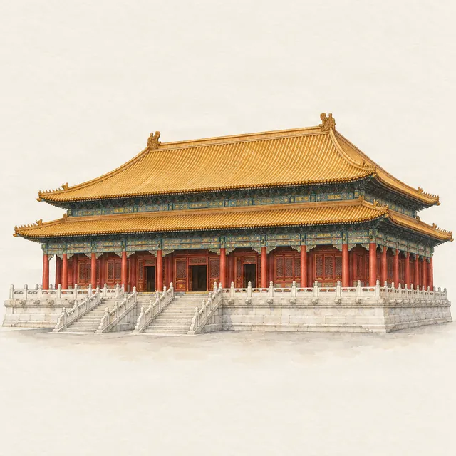

Forbidden City · route
The Forbidden City in half a day
Last checked:

How long do you need in the Forbidden City?
Half a day is enough: allow 3–4 hours, which covers the central axis from the Meridian Gate to the Gate of Divine Might (about 1 hour 40 minutes of walking and short stops before queues) plus one side area such as the Clock Gallery or the Treasure Gallery. A full day lets you add both galleries and the quieter western palaces.
The palace is one-way: you enter from the south through the Meridian Gate and leave from the north or east. Plan the route as a single walk north, with side trips to the east or west on the way. The Forbidden City map shows both routes and 21 spots on one page.
What should I do before I go?
- Book a ticket online: sales open at 20:00 Beijing time seven days before your visit, and no tickets are sold on the day. See how to book with a passport.
- Bring the original passport you booked with; a photo or copy will not do.
- Check the day: the palace is closed on Mondays except public holidays.
- Choose your session: morning tickets must check in by 12:00; afternoon tickets from 11:00.
What is the best half-day route?
- Meridian Gate (0:00). Security and ticket check. The U-shaped gate is the largest in the palace; once through, cross the Inner Golden Water Bridges.
- Gate of Supreme Harmony. Closed for conservation since 3 August 2026: walk round it by the side passages. Its bronze lions are still visible outside the works fence.
- Hall of Supreme Harmony (about 0:20). The throne hall on its three-tier marble terrace. Before you climb, find the bronze tortoise and crane, the sundial and the small grain measure on the terrace, and count the ten beasts on the roof ridge.
- Halls of Central and Preserving Harmony. Two smaller halls behind it, where the emperor prepared for ceremonies and held palace examinations. Behind the last one, a huge carved marble ramp runs down the middle of the stairs.
- Palace of Heavenly Purity, Hall of Union, Palace of Earthly Tranquility (about 1:00). The Inner Court, where the emperors lived. The Hall of Union holds the imperial seals and a water clock.
- Side trip (about 1:15–2:30). East to the Clock Gallery and the Treasure Gallery (¥10 each, bought separately), or west to the Six Western Palaces, where consorts lived.
- Imperial Garden (about 2:45). Old cypresses, rockeries and pavilions at the north end, including a pair of intertwined cypresses.
- Gate of Divine Might (about 3:15). Exit north. Jingshan Park is across the road.
Times are from the gate and assume an unhurried pace. The Penyola guide's Classic Highlights walk covers steps 1–5, 7 and 8 in about 1 hour 36 minutes without queues; its Full Exploration walk, with the galleries and side palaces, takes about 4 hours.
What can I skip if I am short of time?
If you have only two hours, stay on the central axis and skip the side trip. The halls along the axis are viewed from their doorways, so you lose little by not queuing at each one: look in, then move on. The galleries are worth the extra ticket only if you have at least an hour left.
Morning or afternoon?
Go early. The first entry is 08:30, and the central axis is quietest in the first hour before tour groups arrive. In the afternoon, remember last entry is 16:00 from April to October and 15:30 from November to March, and the galleries take their last visitors ten minutes later.
Where do I go after the Forbidden City?
Cross to Jingshan Park and climb to Wanchun Pavilion. After half a day inside the walls, the hilltop shows you the whole palace you have just walked through. If you leave by the East Glorious Gate instead, you come out near Wangfujing.
Can I follow this route offline?
Yes. Penyola has both walks on a hand-drawn map of the palace, with stories and narrated audio for the halls, beasts, trees and inscriptions along the way, all stored on your iPhone. Compare it with the other ways to hear the palace's stories in Forbidden City audio guide options.
More planning guides
- Forbidden City map: two routes and 21 spots
- Forbidden City tickets for foreigners
- Forbidden City entrance and exits
- Hall of Supreme Harmony: what to look for
- Jingshan Park: the best view of the Forbidden City
Sources
Checked on these official pages on 9 November 2026:
Photo credits
Photos in our videos for this page, from Wikimedia Commons:
- Views of the Forbidden City from Jingshan Park 1 by EditQ, CC BY-SA 4.0
- Wumen by Shizhao, CC BY-SA 2.5
- Hall of Supreme Harmony by Gisling, CC BY 3.0
- Beijing China Forbidden-City-03 by CEphoto, Uwe Aranas, CC BY-SA 3.0
- Beijing Forbidden City Hall of Central Harmony terraces-20071018-RM-143613 by Reinhold Möller Ermell, CC BY-SA 4.0
- 保和殿 Baohe Hall - panoramio by lienyuan lee, CC BY 3.0
- Palace of Heavenly Purity (20220218132818) by N509FZ, CC BY-SA 4.0
- 交泰殿 Jiaotai Hall - panoramio by lienyuan lee, CC BY 3.0
- Palace of Earthly Tranquility (20220218133044) by N509FZ, CC BY-SA 4.0
- Imperial Garden (54448349292) by xiquinhosilva, CC BY 2.0
- Forbidden City Beijing Shenwumen Gate by kallgan, CC BY-SA 3.0
- Wanchun Pavilion, Jingshan Park, Beijing - November 2016 - 113 by Another Believer, CC BY-SA 4.0


.jpg){kind=link}

.jpg){kind=link}
.jpg){kind=link}